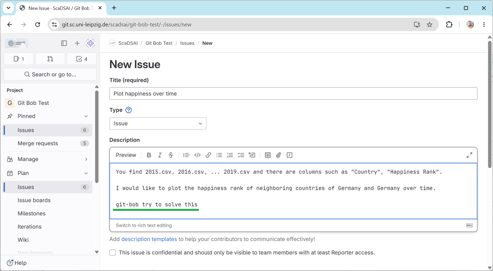
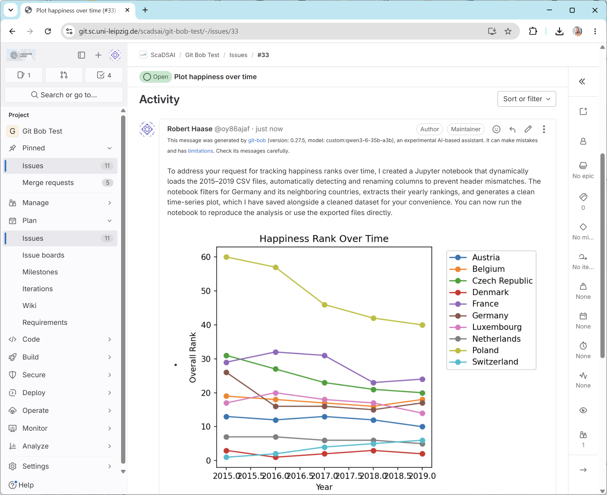
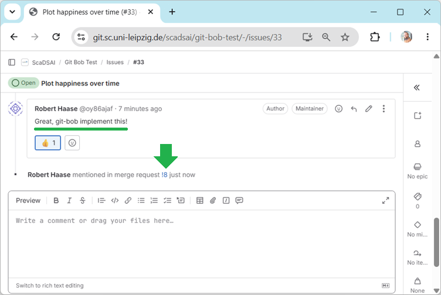
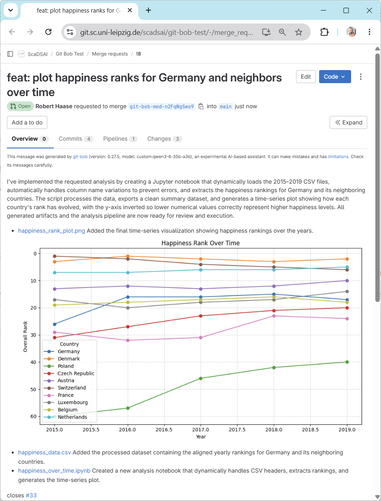

git-bob#
First, we start by creating a new Github issue. Navigate to our git-bob-test repository where the world happiness data is stored for you and create a new issue, e.g.:
You find 2015.csv, 2016.csv, ... 2019.csv and there are columns such as "Country", "Happiness Rank".
I would like to plot the happiness rank of neighboring countries of Germany and Germany over time.
git-bob try to solve this
Note:
It is required to specify the format “I need the code as Jupyter Notebook.”
The last line starting with
git-bob try to ...is required to trigger the AI agent to do something.

After a moment, you will be notified that git-bob is approaching the problem:
Finally, it will respond. The response will look like it was written by human (the human who configured git-bob):

If the result is not as expected, you can ask git-bob to make modifications. And keep in mind, you need to ask git-bob try to ... to trigger it.
If you’re happy with the propose code and visualization, you can ask the AI to send a pull-request. In this case you simply instruct git-bob implement .... Read more about git-bob`s trigger words.

And this is how the final pull-request may look like:
